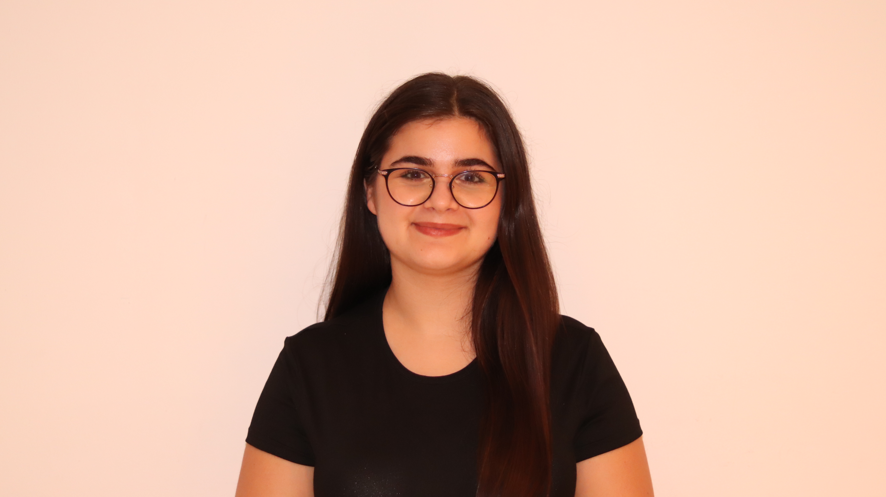
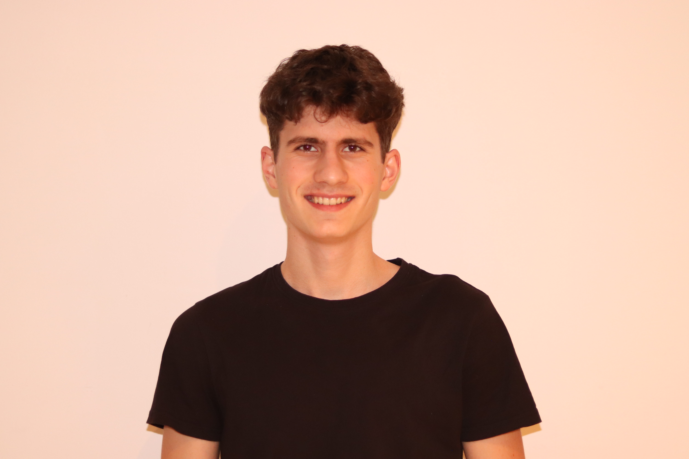
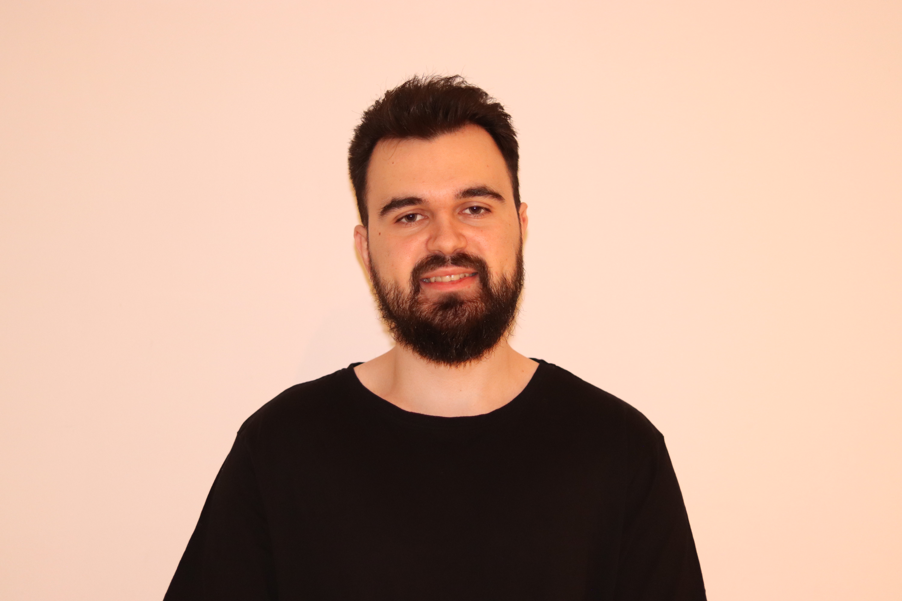
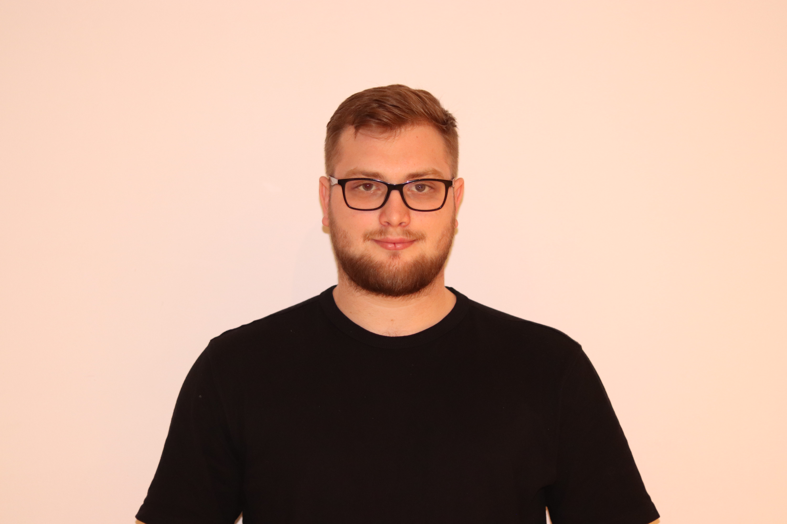
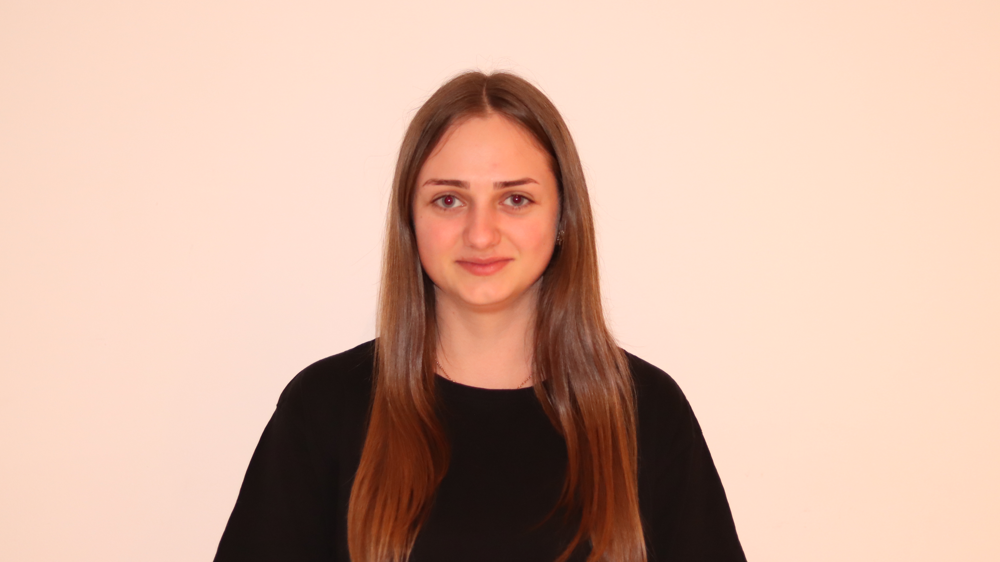
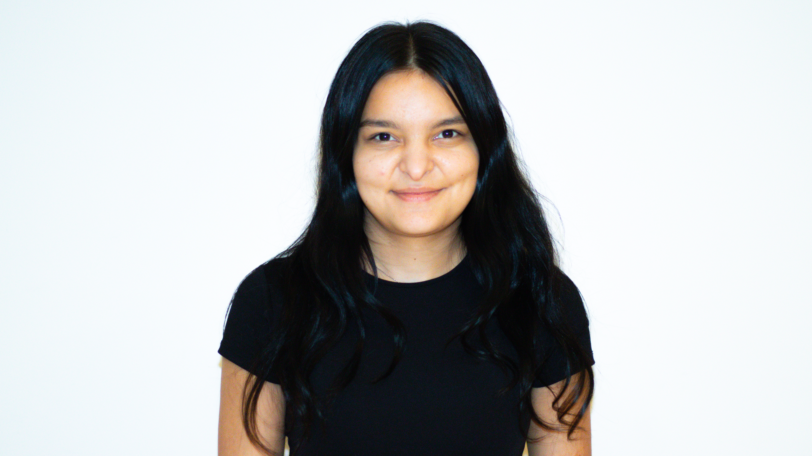

Liga Studenților
Științelor Vieții
Biroul de Conducere
Studenți implicați și dedicați
Echipa noastră este compusă din tineri pasionați, cu dorință reală de implicare, care lucrează împreună pentru organizarea de proiecte, evenimente și acțiuni ce susțin dezvoltarea comunității studențești.
Suciu Alin
Președinte

Nicola Daria-Alexia
VP Relații Interne
Nuț Daria
VP Relații Externe
Miclăuș Rareș
Secretar General

Tarța Cătălin
Trezorier

Pop Ovidiu
Coord. Resurse Umane

Crișan Florin
Coord. Evenimente

Creța Ioana
Coord. Proiecte

Pașcu Ramona
Coord. Imagine

Mureșan Radu
Coord. Logistică
Cihărean Filip
Coord. Fundraising
Bochiș Mihai
Cenzor
Chip
Mascotă


Obiectivul Nostru
Obiectivul nostru principal este să coordonăm și să susținem toate inițiativele LSSV, astfel încât fiecare student să se simtă parte dintr-o comunitate activă și implicată. Ne propunem să oferim sprijin real studenților, să facilităm integrarea lor în viața facultății și să creăm oportunități de dezvoltare personală și profesională prin proiecte, evenimente și programe relevante.
Ne angajăm să asigurăm un mediu organizat, transparent și incluziv, în care ideile inovatoare sunt încurajate, iar fiecare membru are șansa să contribuie la dezvoltarea comunității. Prin leadership activ și colaborare între departamente, urmărim să transformăm inițiativele în experiențe concrete, memorabile și benefice pentru întreaga comunitate studențească.
În esență, obiectivul nostru este să construim o familie în care fiecare student se simte valorizat, sprijinit și motivat să se implice, să învețe și să crească împreună cu colegii săi, consolidând astfel spiritul de unitate și apartenență în cadrul USAMV.

De ce LSSV?
Liga Studenților Științelor Vieții există pentru a oferi studenților un spațiu activ și implicat, unde fiecare are oportunitatea să se dezvolte, să învețe și să contribuie la comunitatea academică. Prin proiectele, evenimentele și inițiativele noastre, promovăm spiritul de colaborare, creativitatea și implicarea reală în viața facultății.
Alegând să faci parte din LSSV, beneficiezi de sprijin constant, ghidaj și acces la resurse care te ajută să te integrezi rapid, să îți descoperi pasiunile și să construiești conexiuni autentice. Comunitatea noastră oferă oportunități de voluntariat, leadership și networking, transformând experiența academică într-una completă și memorabilă.
În esență, LSSV nu este doar o organizație studențească — este un cadru în care fiecare student poate să crească personal și profesional, să participe activ la proiecte și evenimente relevante și să facă parte dintr-o familie unită de valori comune, responsabilitate și pasiune pentru domeniul științelor vieții.